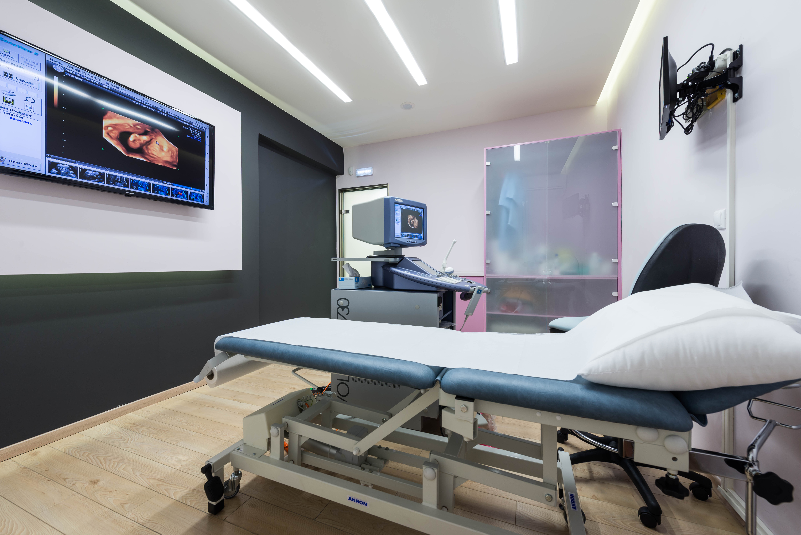
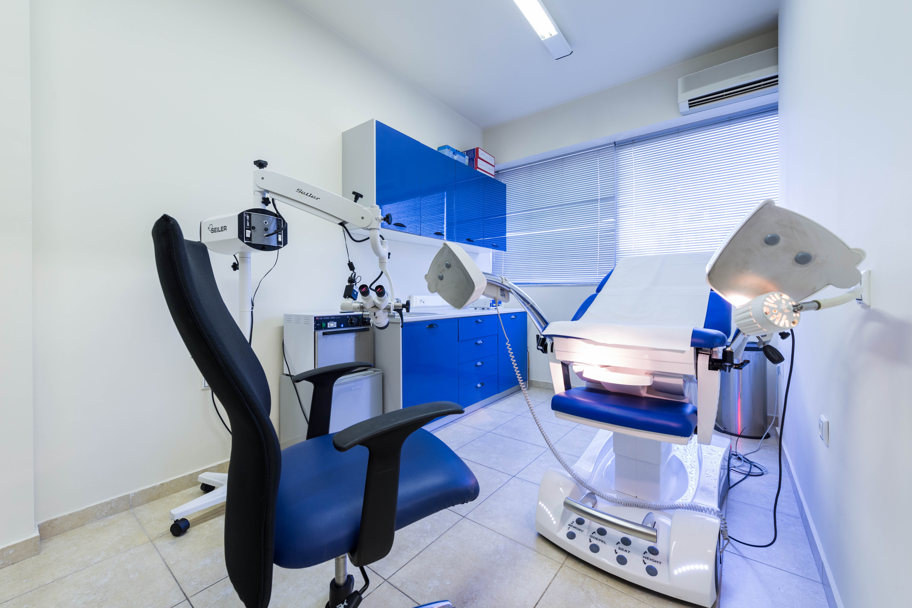

Contact
Get in touch
The doctor sees patients by appointment at two fully equipped clinics, in Athens and in Nea Smyrni.

Athens Clinic
EMBRYOCOSMOS
124A Vasilissis Sofias Avenue
Athens, 11526
Tel. 210 771 7705 · Mob. 695 519 9198
Open in Maps →
Nea Smyrni Clinic
Central Square
11 25is Martiou
Nea Smyrni, 17121
Tel. 210 934 3538 · Mob. 695 519 9198
Open in Maps →Appointments & enquiries
Call 695 519 9198 or email mrotas@gmail.com.